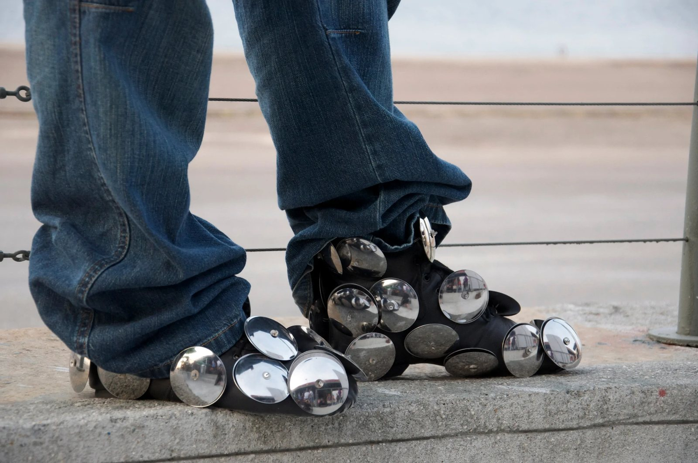
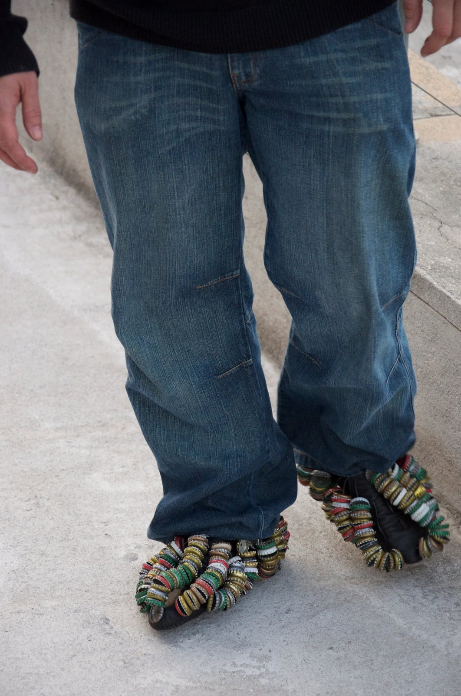
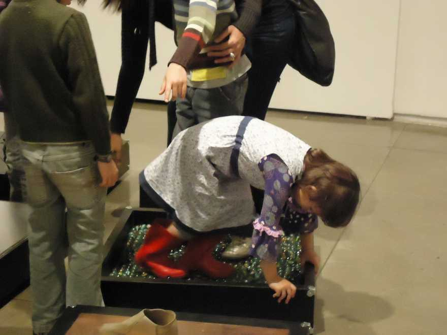

Sapatos Sonoros
Interações Estéticas Award, Funarte, 2009
Sound recording in preparation.
Series of shoes fitted with tambourines, bells, rattles and shells, worn in performances. Shown at the Panorama da Arte Brasileira, MAM São Paulo (2011), and at exhibition openings between 2011 and 2015. Interações Estéticas Award, Funarte, 2009.
- Award
- Interações Estéticas Award, Funarte, 2009
- Materials
- Tambourine shoes, bell shoes, rattle and shell shoes; mixed materials
- Dimensions
- Variable dimensions
- Venue
- Panorama da Arte Brasileira, MAM São Paulo (2011); performances at exhibition openings (2011, 2013, 2015)
- Collection
- Augusto Rodrigues Collection
- Group exhibition
- Aparição (2015)



